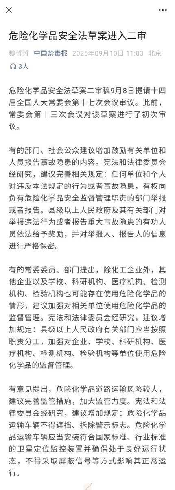

某些人就别来说一些捕风捉影的话来洗白亚硝酸钠自杀/抹黑窝了，什么“发泄恶意”，“消费死者”，“无端揣测”之类的胡说八道
我不想回应这些莫名其妙的，毕竟造谣一张嘴，辟谣跑断腿
终于，用亚硝酸钠自杀真的导致当局立法回应了，一旦这个法律实行，谁也别想用亚硝酸钠自杀了，大家满意了?
怀念亚硝酸钠吗?

我不想回应这些莫名其妙的，毕竟造谣一张嘴，辟谣跑断腿
终于，用亚硝酸钠自杀真的导致当局立法回应了，一旦这个法律实行，谁也别想用亚硝酸钠自杀了，大家满意了?
怀念亚硝酸钠吗?

就在刚刚，危化品安全法草案已进入二审修订阶段
某些人固执地认为吃亚硝酸钠自杀不会给他人添麻烦，那么就看看这个吧😅
亚硝酸钠属于危化品，私人买卖违法。但是鉴于没出什么事故，警察也懒得抓人，对这些灰产睁一只眼闭一只眼
这些人倒好，买了亚硝酸钠自杀，简直就是向警察自首，还有人硬洗，没谁了 https://t.co/YZUV46uup7
某些人固执地认为吃亚硝酸钠自杀不会给他人添麻烦，那么就看看这个吧😅
亚硝酸钠属于危化品，私人买卖违法。但是鉴于没出什么事故，警察也懒得抓人，对这些灰产睁一只眼闭一只眼
这些人倒好，买了亚硝酸钠自杀，简直就是向警察自首，还有人硬洗，没谁了 https://t.co/YZUV46uup7